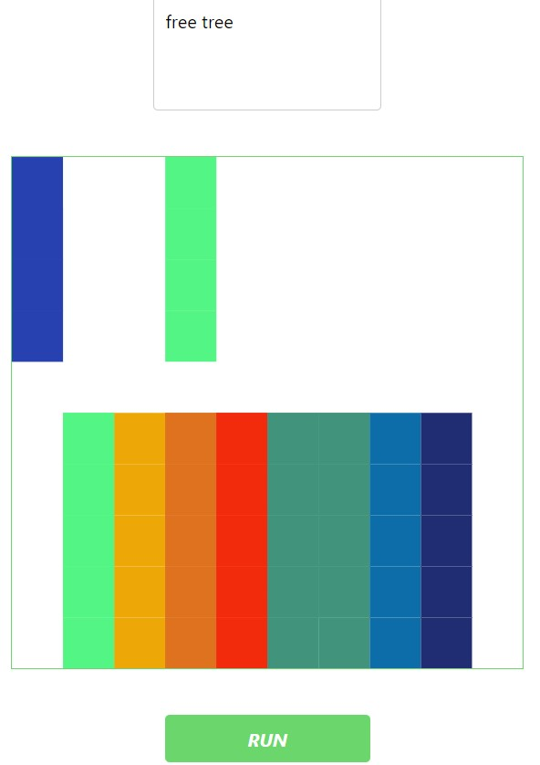

Ein Large Language Model (LLM) ist ein Computerprogramm, das speziell für das Verständnis menschlicher Sprache und das Verfassen von Texten konzipiert ist. Es werden zahlreiche unterschiedliche Texte verwendet, um die Sprache zu erlernen. Dadurch ist es in der Lage, Tätigkeiten wie Fragen zu beantworten, Texte zu verfassen oder sogar Sprachen zu übersetzen. Das Werkzeug, welches ich genutzt habe, um mit einem Large Language Model zu arbeiten war Ollama.
Dieses llm ist relativ einfach zusammengesetzt. Es besteht aus einem SVG Muster, welches farblich gereiht ist. Dieses Raster sieht ist das Raster, in welchem die Muster entstehen. Je nach Reimform entsteht ein bestimmtes Muster.Wichtig war es Regeln für das llm zu entwickeln, damit dieses auch wie gewollt handelt. Wichtig ist hierbei öfter die Funktion des llms zu überprüfen. Funktionieren diese nicht, muss der Fehler gewunden werden und daraus sollte eine explizite Regel geschrieben sollen. Somit grenzt man den Raum für Fehler des llms mithilfe von probieren und korrigieren durch Regeln und Anforderungen, ein, um somit im besten Falle ein funktionierendes llm zu programmieren, welches die Sprache oder jeglichen Input versteht und mithilfe der Anforderungen und des trainieren, dementsprechend bearbeitet. Aus dem Grund, dass das SVG Raster sehr groß war und es viele Kombinationsmöglichkeiten gibt, wurden Regeln beschrieben, welche genau Farbkombination für die jeweilige Reimform gezeigt wird. Die Reimformen, nach den sich die Regeln bezogen waren, Reime welche auf mit einem „e“ enden, Reime welche mit einem „a“ enden, Paarreime, Kreuzreime und sonstige Reime.
Damit ein Muster generiert wird muss das SVG Farbfelder so aufgeteilt werden, sodass jedes Reimschema eine bestimmte SVG Muster besitzt, ohne ein „random“ Tag nutzen zu müssen, da hier die Entstehung des Musters, das Interessante am Projekt ist. Probleme dieser Ausführung ist der Zeitaufwand, da einzelne Koordinaten den Reimformen zugeordnet werden. Desto genauer und größer die generierten Muster sein sollen, je detaillierter wird die Arbeit. Weitere Schwierigkeiten waren das Design der Seite. Farblich wurde die Website sehr schlicht gestaltet, einfarbig und ohne jegliche Erläuterung oder Überschrift, welches hierbei nicht sonderlich ansprechen wirkt. Ein weiterer auffallender Kritikpunkt sind die wenigen Farbmuster, welche generiert werden können, aufgrund der nicht vollständigen Zuordnung der Koordinaten zu den Reimen.
Das llm hat viel Freiraum für Verbesserung. Die generierten Muster könnten sich stärker zu einander untereinscheiden. Eine Art und Weise, wie dies zmgesetzt werden könnte ist, dass es mehr anforerungen zu den einzellen Reimen beschrieben werden und dem llm dennoch mehr möglichkeit und freiraum zu geben je Reimform, welche SVG-Koordinaten generiert werden. Trotz weiteren Anforderungen, ist es hierbei wichtig, dass die Muster nicht von einem selbst gecodet werden sollten, sondern nur die Regeln und Möglichkeiten des llm in der Mustergenerierung. Eine weitere Idee wäre diese, die Muster etwas interessanter zu gestalten. Hier könnte man das SVG Muster feiner und mit einem bestimmten Farbschema erstellen, um nicht mehr Muster zu generieren sondern, Formen oder Piktograme. Paarreime könnten runde Figuren generieren. Kreuzreime dreieckige Formen und soe weiter. Die Formen werden zu den Reimformen zugeordnet, mithilfe von Regeln, dennoch generiert das llm hier verschiedene Muster und nicht immer dieselben, wie es in dem jetzigen Large language Model der Fall ist.
Möchtest du mein Large Language Model sehen?